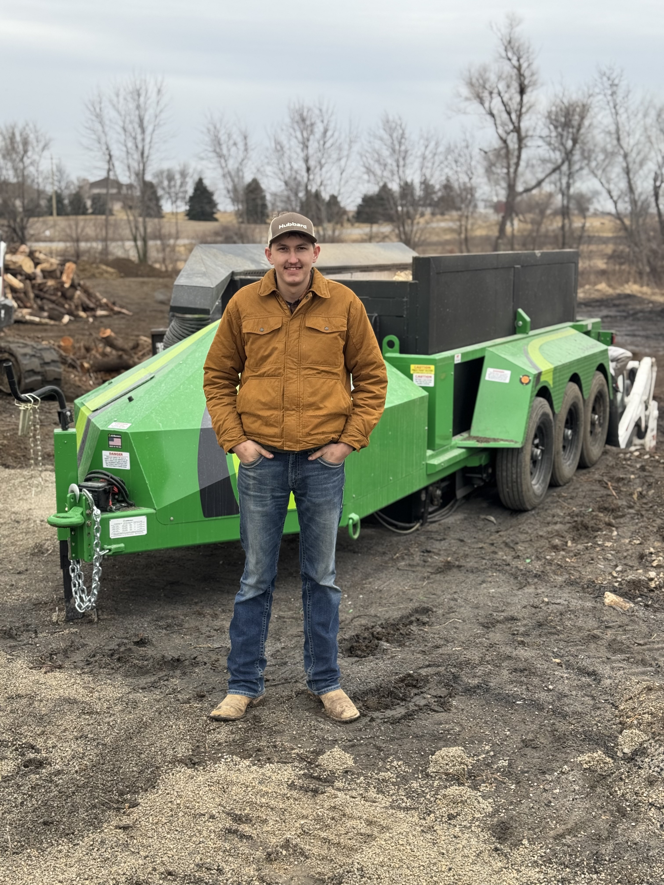

Sandhills Biochar was built around the idea that invasive cedar trees do not have to be wasted. What began as a passion for agriculture, land stewardship, and innovation has grown into a mission focused on turning a growing problem into something valuable.
Based in the Nebraska Sandhills, we have seen firsthand how eastern red cedars continue to spread across pastures and rangeland, increasing wildfire risk, reducing grazing acres, and impacting the long-term health of the land. Instead of simply burning or burying removed trees, Sandhills Biochar is focused on converting that material into biochar, a carbon-rich product with growing uses in agriculture, soil improvement, water filtration, and environmental management.
Our goal is to combine practical land management with innovative solutions that create lasting value for producers, ranchers, and the future of rural communities. This is only the beginning, and we are excited to continue building, learning, and sharing the journey along the way.